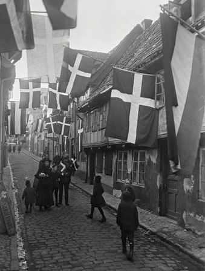
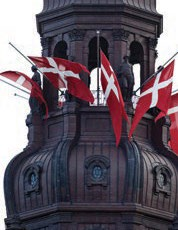
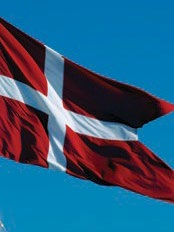

6.3 – DET DANSKE FLAG
sidde 190
Det danske nationalflag, Dannebrog, er et hvidt kors på rød baggrund. Danne brog betyder ”danernes fane” eller ”rødfarvet fane”. Selv om legenden fortæller, at Dannebrog faldt ned fra himlen under et militært slag i Estland i 1219 og sikrede danskerne sejren, er flaget i virkeligheden nok en fane, som allerede blev brugt af de riddere, der i middelalderen drog på korstog.
Dannebrog regnes som et af verdens ældste nationale flag og har siden 1400-tallet været brugt som fane, når danske konger drog i krig. Op gennem 1600- og 1700tallet var det kun myndighederne og flåden, der brugte det danske nationalflag.
Men fra midten af 1800-tallet blev det populært i befolkningen at flage. I dag flager mange danskere med Dannebrog ved festlige lejligheder, for eksempel en privat fødselsdag eller en officiel mærkedag. Flaget bruges også ved begra velser og bisættelser, hvor flaget kun hejses halvt op på flagstangen indtil bisæt telsen eller begravelsen har fundet sted.
På bestemte datoer skal alle offentlige myndigheder flage. Det skal de for eksempel ved kirkelige højtider, og når kongehusets medlemmer har fødselsdag. Mange virk somheder og privatpersoner markerer også disse dage ved at hejse Dannebrog. Også historiske mærkedage markeres ved at flage med Dannebrog. Det gælder for eksempel Danmarks befrielse den 5. maj og grundlovsdag den 5. juni.
I Danmark er det ikke tilladt at flage med andre landes flag end det danske uden tilladelse fra politiet. Man må dog gerne flage med Grønlands flag, Færøernes flag, de andre nordiske landes flag samt FN-flaget og EU-flaget uden politiets tilladelse.
Danmarks mest kendte orden (medalje), Dannebrogordenen, er opkaldt efter det danske flag. Den uddeles af kongen til højtstående embedsmænd, politikere, kulturpersoner, militærfolk, fremtrædende erhvervsfolk og forskere, som har gjort en særlig indsats for at fremme Danmarks interesser.Foto af Dannebrog.Foto af
Læremateriale Til Indfødsretsprøven



Fonte: Læremateriale til Indfødsretsprøven, SIRI.